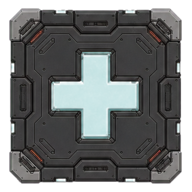

수리 장판 베이스
world/facility_repair_pad
AS-IS

작은 중앙 장식으로만 표시되어 실제 반경 150과 분리돼 보임.
TO-BE CANDIDATE
넓은 사각 dock와 비어 있는 원형 well. 실제 효과 경계는 별도 동적 overlay.
승인 후: 베이스를 실제 판정 footprint에 맞춰 배치하고, collision 진실값은 그대로 유지합니다.
현재: art/gameplay/semantic-v2/world/facility_repair_pad.png
후보 sheet: generated/world-v4/world-functional-candidates.png · 좌상단